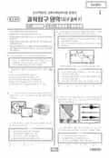

문제지


시험지를 먼저 풀어 보세요. 등급컷·표준점수·난이도는 흐리게 가려 뒀어요.
정답 변경 없음
이의신청 1문항 · 평가원 상세 답변 1문항
이의 요지
이의 신청한 내용도 이와 관련이 있습니다.
평가원 답변
본 문항은 세계 해양의 물수지 자료로부터 해양, 대륙, 대기 사이의 물수지 평형 관계를 해석하는 능력을 평가하는 문항입니다. 이의 신청하신 내용은 크게 두 가지로 정리할 수 있습니다.
① 물의 양(부피)은 높이 변화와 다르므로 <보기> ㄷ의 서술 자체가 틀렸다.
② 해양 전체에서 대기를 통해 대륙으로 이동하는 물의 양은 대륙에서 증발하여 해양으로 이동하는 물의 양을 고려할 때 110mm/년보다 많아야하므로 <보기> ㄷ은 틀렸다.우선 ①에 대한 답변입니다.문항의 문두에서 ‘표는 세계 해양의 물수지를 연간 해수면 높이 변화로 환산하여 나타낸 것이다 (단위 mm/년)’로 자료에 제시된 단위가 무엇을 의미하는지를 밝히고 있습니다. 즉, 제시된 자료에서 ‘mm/년’은 높이의 단위가 아니라 물의 양을 나타내는 부피의 단위입니다. 강수량을 mm 단위로 표현하는 것을 생각한다면 쉽게 이해할 수 있을 것입니다.다음으로 ②에 대한 답변입니다.<보기> ㄷ은 지구환경을 구성하는 요소인 해양, 대륙, 대기에서의 물수지 평형 관계에 대한 이해 정도를 묻는 것입니다. 그러나 대기를 지구환경 구성요소의 주체로 보지 않고 단지 물의 이동 통로로만 본다면 물수지 평형을 올바르게 이해할 수 없습니다. 이의 신청한 내용도 이와 관련이 있습니다.이의 신청 내용의 요지는 ‘대륙에서 증발하여 해양에 강수로 내린 수증기 양을 고려하면 해양에서 대륙으로 이동한 물의 양은 110mm/년 보다 많다’는 것입니다. 이 진술은 일견 타당한 것처럼 보이지만, 대기로부터 나가는 물(강수량)을 대륙 기원과 해양 기원으로 구분하려고 함으로써 발생하는 오류를 포함하고 있습니다. 이는 마치 해양을 단순히 물의 이동 통로로만 보고 해양에 존재하는 물을 대륙 기원과 대기 기원으로 구분하려는 것과 같은 맥락의 오류입니다.문항에 제시된 증발량, 강수량, 육수유입량은 해양과 대기 및 대륙의 상호작용을 통해 이동한 물의 양을 나타낸 것입니다. 이 값은 각 구성 요소 사이의 모든 상호작용의 결과를 포함하고 있습니다. 따라서 이 자료를 바탕으로 해석할 때 해양에서 대기를 통해 대륙으로 이동하는 물의 양은 110mm/년이고, 이는 대기를 통한 대륙과 해양의 상호작용의 결과가 모두 포함된 것입니다.이의 신청 중에는 <보기> ㄷ의 내용에 ‘결과적으로’라는 표현이 추가되거나 ‘대기를 통해서’라는 표현이 빠져야 한다는 주장도 있습니다. 물수지 평형의 관점에서 ‘결과적으로’라는 표현을 잘못 해석하면 ‘결과적으로 물의 이동량이 0이 된다’라고 오해할 수도 있고, ‘대기를 통해서’라는 표현을 빼면 다른 경로까지 확대 해석될 우려가 있습니다. 출제 과정에서 이러한 부분은 심도 있게 논의되었습니다. 따라서 본 문항에는 오류가 없습니다.
원문 표에서 읽어낸 문항만 적었어요. 전체 목록은 아래 답변자료 원문에 있어요.
발행 기관: 한국교육과정평가원(KICE). 파일 위치: 이 사이트가 보관한 사본 · 외부 서버 직접 링크(wdown.ebsi.co.kr). 저작권은 발행 기관에 있습니다. 원본과 다르거나 게시 중단이 필요하면 연락처로 알려 주세요. 등급컷 출처 구분은 데이터 원칙에서 설명합니다.